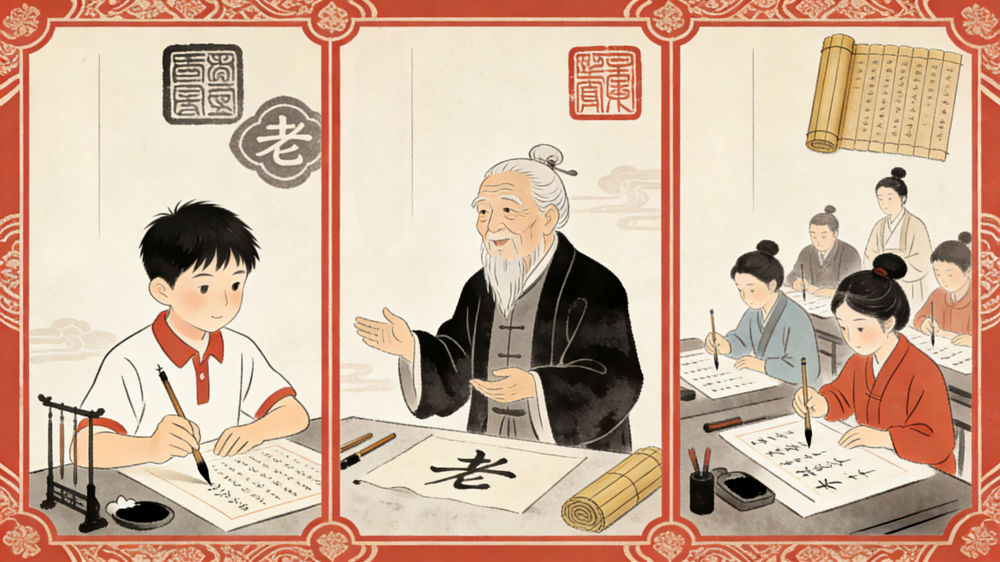
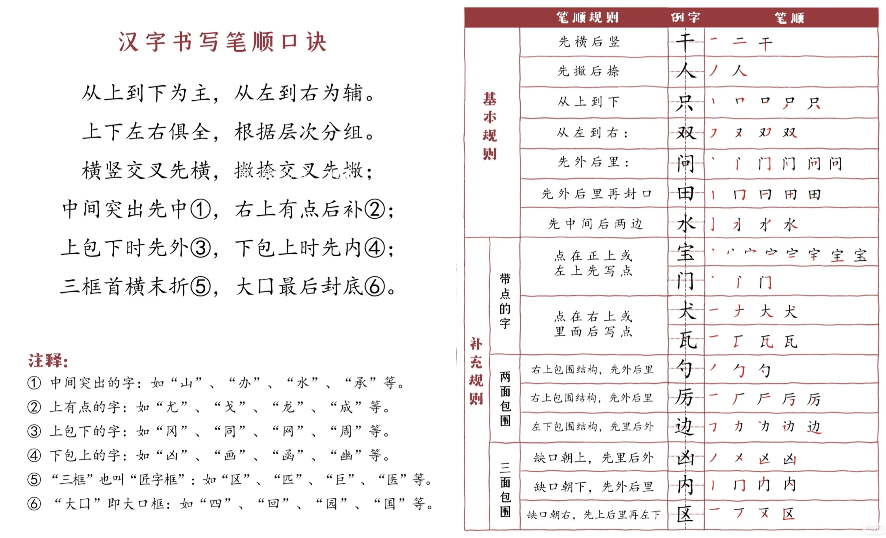

首页
汉字的由来
汉字成长史
造字小秘密
汉字里的文化
趣味汉字乐园
活字印刷
汉字小名家
传承汉字文化
首页
汉字的由来
汉字成长史
造字小秘密
汉字里的文化
趣味汉字乐园
活字印刷
汉字小名家
传承汉字文化
汉字不只是写字的符号，更是咱们老祖宗传下来的文化密码！今天咱们聊聊汉字有多重要，再说说怎么把汉字文化好好传下去吧！
是记录中华文明的“活化石”，从甲骨文到现在，几千年的故事都靠它传下来。
是中国人的“文化身份证”，不管在哪，看到汉字就像找到了根。
是厉害的“智慧工具箱”，一个字里藏着古人的观察和思考，比如“明”字里有日有月，一看就懂是“亮”的意思。

1：写好规范字
平时写字尽量写规范的楷书，少写“连笔乱字”，让汉字的美能好好展现。
2：懂汉字故事
多了解汉字的由来，比如“孝”字是“孩子背着老人”，知道这些故事，写字都更有感觉。
3：练基础书法
试试写毛笔字的基本笔画，哪怕每天写10分钟，也能慢慢摸到汉字的“笔触感”。
